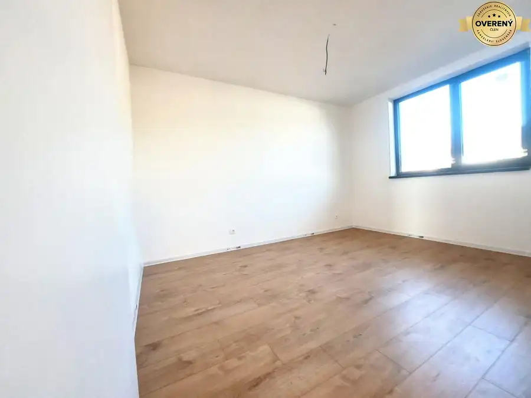
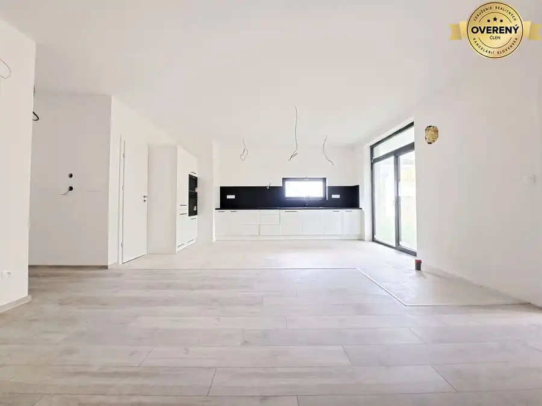
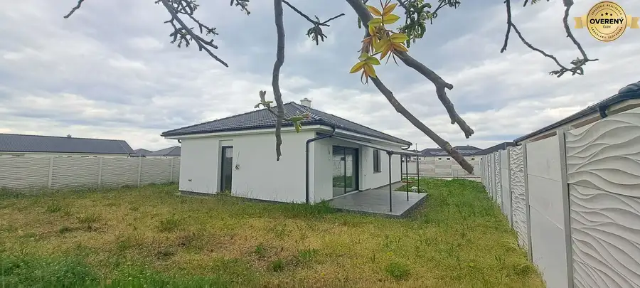

Novostavba pri jazere - 4 izbový rodinný dom v štandarde v obci Selice
Selice
- Dispozícia4-izbový
- Plocha94.59 m²
- Poschodie0. z 1
- Stavpôvodný
- Vlastníctvofiremné
- Energetická triedaA
O nehnuteľnosti
So súhlasom majiteľa Vám ponúkame na predaj modernú novostavbu 4-izbového rodinného domu v tichej a prírodou obklopenej časti obce Selice s výhľadom na jazero a dobrou dostupnosťou do okresného mesta Šaľa.
Rodinný dom je výborne situovaný a rozdelený na dennú a nočnú časť. Jeho úžitková plocha bez terasy je 94,59 m2, úžitková plocha vrátane terasy je 108,59 m2, postavený na pozemku o rozlohe o 446 m2. Predáva sa v štádiu štandard.
Štandard zahŕňa:
- keramická dlažba
- plávajúca podlaha
- sanita (toaleta (geberit) 2x, vaňa, zabudované umývadlo so skrinkou 2x, zrkadlo)
- zárubne a dvere
- plynový kotol
- zásobník vody
Technické parametre:
- obvodové múry postavené z tehál hr. 30 cm
- nosné múry o hr. 25 cm
- vnútorné priečky o hr. 15 cm
- zateplený polystyrénom o hr. 15 cm
- stropná izolácia minerálna vlna hr. 40 cm
- okná plastové, izolačné 3 sklo, vo farbe antracit/biela
- úložný priestor na povale 15 m2
- podlahové kúrenie teplovodné na plynový kotol
- voda zabezpečená zásobníkom vody
- predpríprava na internet v každej izbe
- predpríprava na krb
- predpríprava na elektrické vonkajšie žalúzie
- chodník a parkovacie miesto vo dvore zo zámkovej dlažby
Rodinný dom je oplotený z každej strany.
Dispozičné riešenie:
- zádverie
- chodba
- sklad
- detská izba č. 1
- detská izba č. 2
- spálňa
- samostatná toaleta
- kúpeľňa
- technická miestnosť
- kuchyňa s jedálňou a obývacou izbou s výstupom na terasu
- špajza
- terasa
Občianska vybavenosť :
potraviny a zmiešaný tovar, pohostinstvá, čerpacia stanica, pošta, knižnica, materská škola, základná škola s vyučovacím jazykom slovenským aj maďarským, ambulancia praktického lekára, lekáreň
Šport a voľný čas:
futbalové ihrisko, telocvičňa, rybníky
Dostupnosť:
okresné mesto Šaľa: cca 13–14 km
blízke obce: Žihárec, Neded, Tvrdošovce, Trnovec nad Váhom
V CENE NEHNUTEĽNOSTI:
▸Vyhotovenie: Zmluva o Budúcej kúpnej zmluve, Kúpna zmluva o prevode vlastníctva nehnuteľnosti, Návrh na vklad vlastníckeho práva k nehnuteľnosti
▸Úhrada kolkov za návrh na začatie konania o povolení vkladu práva k nehnuteľnosti v lehote 30 dní ▸Úhrada poplatkov za úradné overenie podpisov na kúpnych zmluvách
▸Doručenie podkladov na kataster po úhrade celej kúpnej ceny na účet predávajúceho
▸Asistencia pri odovzdaní nehnuteľnosti, prehlásení energií a služieb
▸Ďalšiu potrebnú asistenciu podľa dohody
Radi Vám pomôžeme sprostredkovať najvýhodnejší hypotekárny úver našimi finančnými špecialistami.
Dohodnite si obhliadku tejto modernej novostavby ešte dnes na telefónnom čísle . Teším sa na obhliadku s Vami. Text a fotografie sú autorským dielom realitnej kancelárie Real Dreams s.r.o.
V inzercii je použitá aj vizualizácia.
Parametre
| Rozloha pozemku | 446 m² |
|---|---|
| Zastavaná plocha | 136 m² |
| Celková rozloha | 108.59 m² |
| Úžitková plocha | 94.59 m² |
| Poschodie | prízemie |
| Počet poschodí | 1 |
| Počet izieb | 4 |
| Vlastníctvo | firemné |
| Stav | pôvodný |
| Voda | verejný vodovod |
| El. napätie | 230V |
| Plyn | áno |
| Kanalizácia | áno |
| Terasa | áno - 1 |
| Postavené z | tehla |
| Zateplený objekt | áno |
| Krb | predpríprava |
| Klimatizácia | nie |
| Energetický certifikát | A |
| Okná | plastové |
| Terén | rovina |
| Novostavba | áno |
| Dátum zverejnenia | 4. 5. 2026 |
Kde to je
Mohlo by Vás zaujímať

Rodinné domy10 265 000 €POSLEDNÁ Novostavba 4-izb rodinného domu v lukratívnej časti mesta Galanta 4-izbový103.91 m² Hľadáte pre seba a svoju rodinu komfortné a moderné bývanie v samostatne stojacom rodinnom dome? Máme pre Vás ponuku POSLEDNEJ VOĽNEJ novostavby…
Rodinné domy10 220 000 €Priestranné novostavby 4-izbových rodinných domov v meste Šaľa Šaľa 110 m² Hľadáte pre seba a svoju rodinu komfortné a moderné bývanie v tichej a kľudnej lokalite? Bývať v meste ale zároveň bez každodenného ruchu mesta? Máme…
Rodinné domy10 255 000 €Novostavba v štandarde - 4 izbový rodinný dom Topoľnica Topoľnica 4-izbový98.55 m² So súhlasom majiteľa Vám ponúkame na predaj modernú skolaudovanú novostavbu 4-izbového nízkoenergetického rodinného domu, v tichej, novovybudovanej…